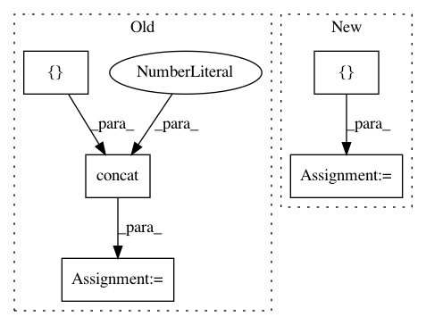

ee602b6f68f0bdd19f449a86955697f8f0a2d54c,gluoncv/data/transforms/video.py,VideoTenCrop,forward,#VideoTenCrop#Any#,304
Before Change
bl = clips[h - oh:h, 0:ow, :]
tr = clips[0:oh, w - ow:w, :]
br = clips[h - oh:h, w - ow:w, :]
crops = nd.concat(*[center, tl, bl, tr, br], dim=2)
crops = nd.concat(*[crops, nd.flip(crops, axis=1)], dim=2)
return crops
After Change
raise ValueError("Cannot crop area {} from image with size \
({}, {})".format(str(self.size), h, w))
new_clips = []
for cur_img in clips:
center = cur_img[(h - oh) // 2:(h + oh) // 2, (w - ow) // 2:(w + ow) // 2, :]
tl = cur_img[0:oh, 0:ow, :]
bl = cur_img[h - oh:h, 0:ow, :]
In pattern: SUPERPATTERN
Frequency: 3
Non-data size: 5
Instances
Project Name: dmlc/gluon-cv
Commit Name: ee602b6f68f0bdd19f449a86955697f8f0a2d54c
Time: 2019-09-21
Author: yizhu59@gmail.com
File Name: gluoncv/data/transforms/video.py
Class Name: VideoTenCrop
Method Name: forward
Project Name: ray-project/ray
Commit Name: 592c161032bfd697ef6f2f334c5cd007062bec4b
Time: 2020-11-25
Author: sven@anyscale.io
File Name: rllib/models/tf/recurrent_net.py
Class Name: LSTMWrapper
Method Name: forward
Project Name: GPflow/GPflow
Commit Name: e100ca38ae807eb1bb5a8e1c5b41b7fe253d4849
Time: 2019-03-25
Author: art.art.v@gmail.com
File Name: gpflow/conditionals/util.py
Class Name:
Method Name: base_conditional